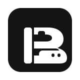
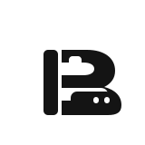

ByteFolk · primary logo candidate
The profile mascot and hidden B are now one mark.
GitHub organization avatar
Restricted color


ByteFolk
digital-employee
digital-employee
A self-hosted runtime for role-based digital employees.
Reading order: first a horned modular coworker, then a hidden capital B. Blue is the open component system; purple is the AI core; the projecting lower counter is the horse/cattle muzzle.